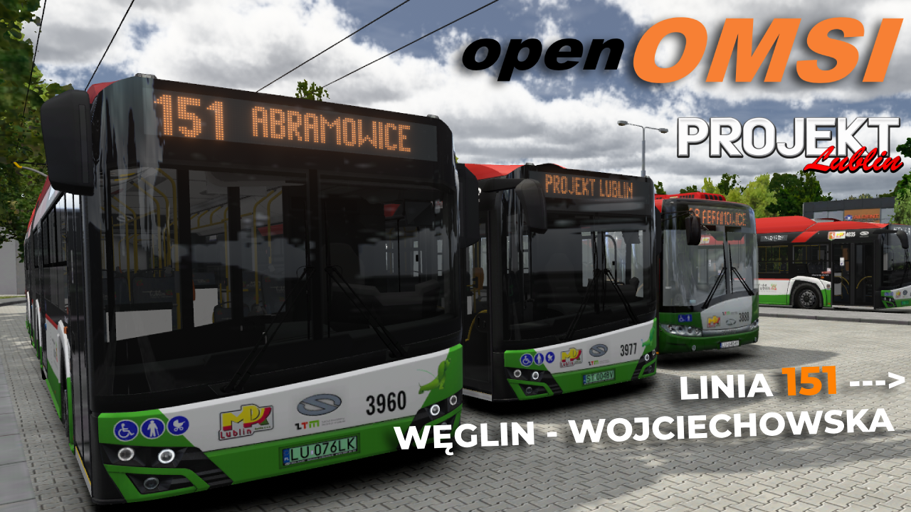
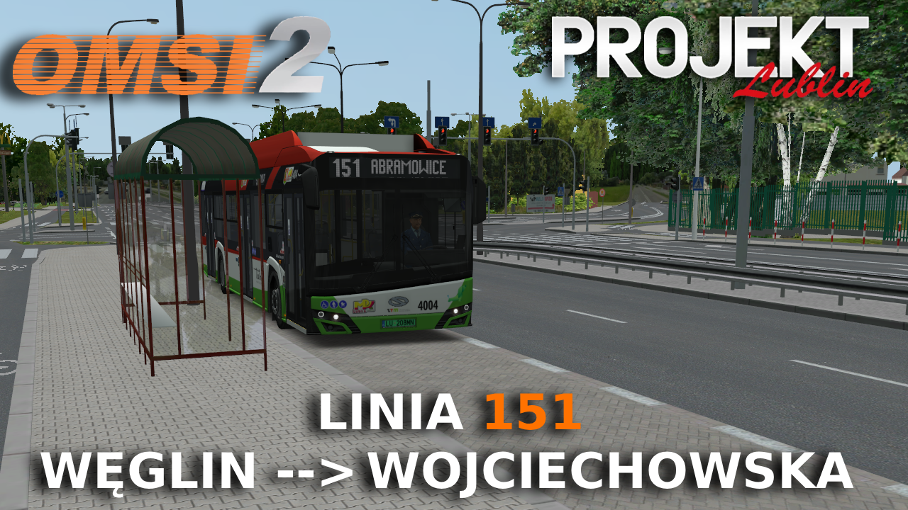
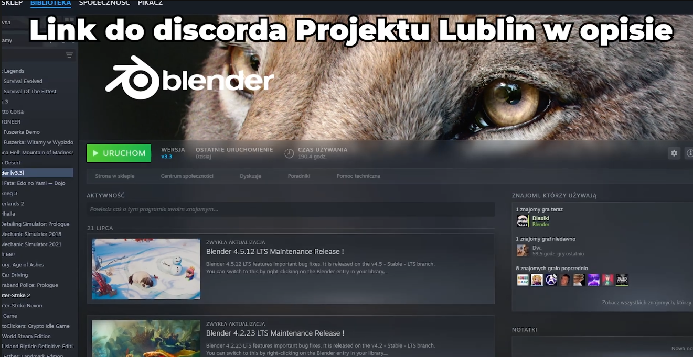
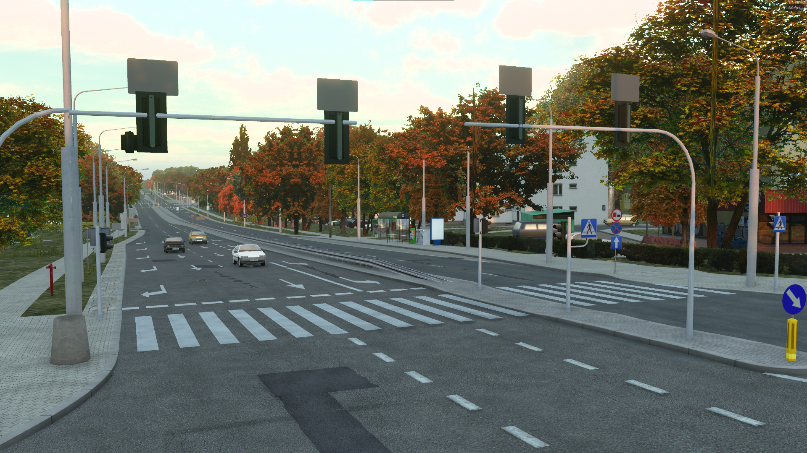
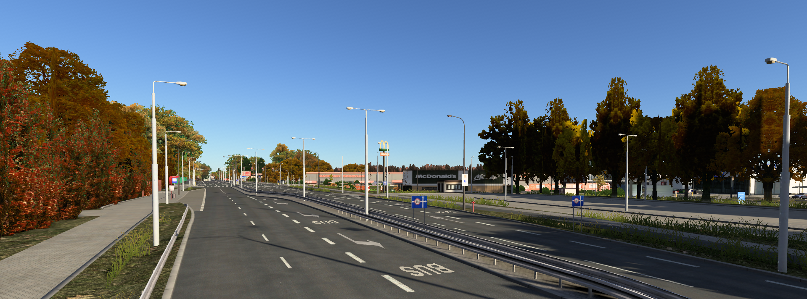
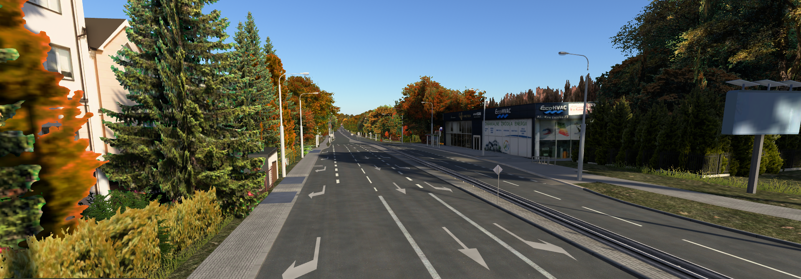
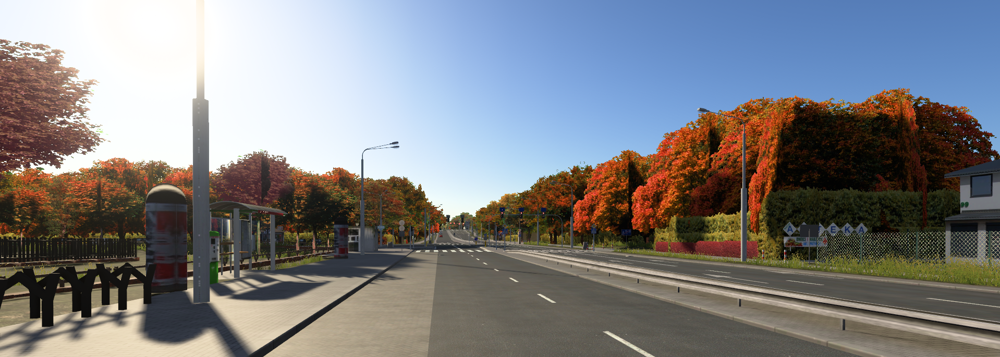
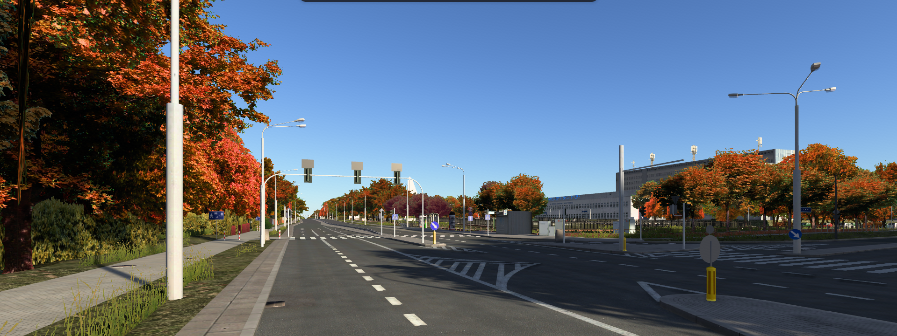
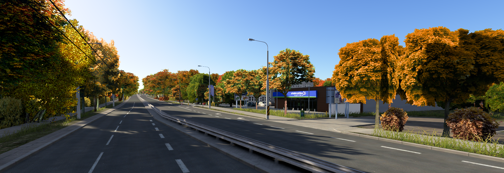

Najnowsze wpisy i informacje o postępach projektu.

01.11.2026
OpenOmsi Projekt Lublin 4.0 151 Węglin-Wojciechowska
Postanowiliśmy przetestować nowy projekt OpenOmsi na mapie Lublina, wyniki są bardzo ciekawe. Mimo, że teren wizualnie może wyglądać identycznie jak na poprzednim filmie to prace nadal trwają. Na Kraśnickiej zostały juz głównie minimalne poprawki i ruch/kostki AI, natomiast ulica Kunickiego zaszła już za skrzyżowanie Kunickiego i Zemborzyckiej (same spliny na ten moment). Niestety rąk do pomocy jest bardzo mało (a właściwie w ogóle ich nie ma) dlatego projekt długo się ciągnie, chętnych do udzielenia jakiejkolwiek pomocy prosimy o kontakt przez "ticket" na serwerze Discord

01.11.2026
Linia 151 Projekt Lublin 4.0 odcinek Węglin - Wojciechowska
Pierwszy przejazd po skończonym odcinku 151 Węglin - Wojciechowska. Wszystkie linki w komentarzu pod filmem.

01.11.2026
Trolejbus Ursus T70116 AI
Witajcie po długiej przerwie. Wracamy do was z małym smaczkiem, co byście nie myśleli, że prace są zawieszone, albo co gorsza, porzucone. Tym razem proponujemy małe urozmaicenie w postaci trajtka Ursus T70116 jako kolejnego modelu AI.
Link do pojazdu:
Data wydania 09.08.18
· dodano nową linię – 156
· zaktualizowano trasę linii 55
· zaktualizowano otoczenie, stan na 2017/2018 rok.
v1.0
Projekt Lublin 1.0
Data wydania 2013 · Dodano linię 55
Modyfikacje
MOD
Modyfikacje stworzone przez społeczność.
Sieć trolejbusowa.
Sieć trolejbusowa ze zwrotnicami, podwieszeniami i wskaźnikami LED poza zajezdnią.
Poprawiony przebieg sieci i usunięte stare przewody z wybranych skrzyżowań.
HOF-y, zapowiedzi i grupa AI MEGA korzystająca z Trollino 18.
.
Po ponad 1.5roku wychodzi nowa wtyczka do blendera. Wtyczka została stworzona przeze mnie. Jako Pierwszy użytkownik tej oto wtyczki zaleca się używać wersji blendera 3.0+. Jest po prostu lepiej zoptymalizowana.Wtyczka jest w fazie BETA błędy mogą cię pojawić szczególnie przy funkcjach tools. Dodatek może zimportować pliki .o3d .cfg .sco tak samo przy eksporcie.W toolsach są funkcje szybkiego importu eksportu oraz automatycznego bake <--- (Bake jest w fazie eksperymentalnej).Wtyczka jest zrobiona pod optymalizacje i wygodę użytkownika.
Myślę że sporo osób korzystało z malowania 2528 z lakierni O Buses, malowanie było ograniczone do jednego 2528. Teraz daje tutaj kontynuacje paczki do pierwszej, drugiej i części trzeciej transzy hybryd. (Wgrać do Texture/Rep FL/SU18_4D/Hybrid)
Klucz: iK5x6aObME-YtpKXLyI3Fg
Siema wydaję malowania dla elektryków 12m 4028-4032, czyli dla ostatniej tercji Solairsów 12 electric dla MPK Lublin, która została dostarczona w 2022 roku. Wyróżnia się ona tym, że posiada pulpit z zegarami cyfrowymi, tak jak np. 18 metrowe elektryki lub hybrydy. Malowania zostały wykonane przeze mnie i były wzorowane na malowaniach z Radomskiej lakierni, dokładnie dla wozów 4001-4006
Wykonanie Obiektów na odcinku Kunickiego-Abramowice
Screenshoty
Galeria

Zwycięska
Opis zdjęcia.

Węglin
Opis zdjęcia.

Poczekajka
Opis zdjęcia.

Szpital Wojewódzki
Opis zdjęcia.

Szpital Wojewódzki
Opis zdjęcia.

Wojciechowska
Opis zdjęcia.
O mieście
Info
Lublin
Lublin to największe miasto we wschodniej Polsce i stolica województwa lubelskiego. Położony nad Bystrzycą, słynie z malowniczego Starego Miasta, Zamku Lubelskiego z Kaplicą Trójcy Świętej oraz Bramy Krakowskiej. To ważny ośrodek akademicki z kilkoma uczelniami i dziesiątkami tysięcy studentów. Lublin ma jedną z największych sieci trolejbusowych w Polsce, a komunikację miejską obsługuje ZTM Lublin.

.jpg)